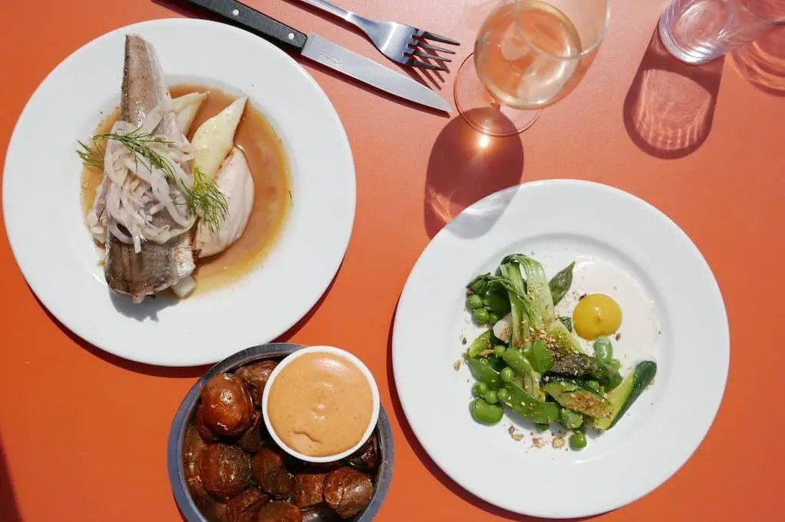
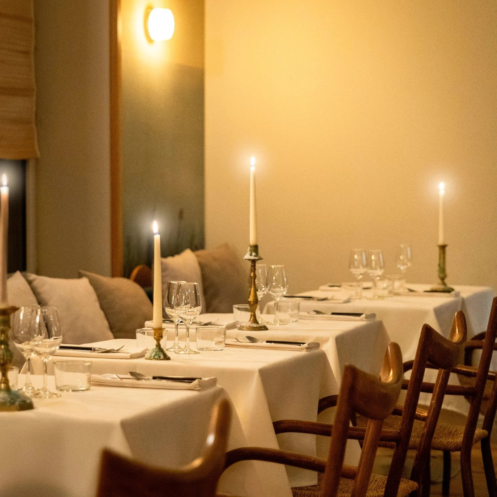
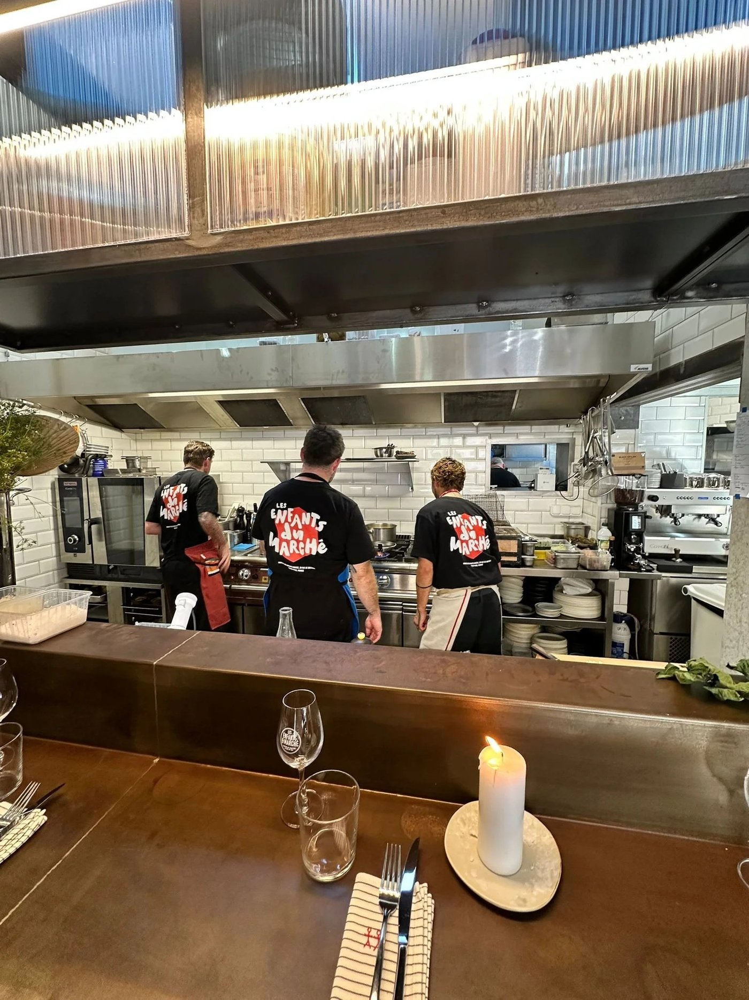

Les 6 meilleures tables de Biarritz en 2026
Deux ouvertures de l'été 2025 ont changé la carte biarrote : un rooftop signé d'un Meilleur Ouvrier de France, et l'équipe du meilleur restaurant végétarien du monde venue de Lyon. Voici six tables, avec leurs vrais jours d'ouverture.

Biarritz a longtemps vécu sur sa réputation de station balnéaire, avec la cuisine que cela suppose. Ce n'est plus vrai. Deux ouvertures de l'été 2025 ont rebattu les cartes, et la ville tient désormais une scène courte mais sérieuse, où l'on trouve aussi bien une auberge basque du XVIIIe siècle qu'une table végétale de haut niveau.
L'essentielBiarritz à table en 2026
- Deux ouvertures de juillet 2025 ont changé la ville : Dialogues, rue du Helder, et La Petite Plage, sur le toit du Talaia.
- L'équipe de Culina Hortus, meilleur restaurant végétarien du monde en 2020, s'est installée à Biarritz avec Dialogues.
- Une table sur six est une résidence : Anema change de chef au fil des saisons.
- Attention aux jours d'ouverture : quatre de ces six maisons ferment deux jours par semaine, et deux ne servent que le soir.
Ce que nous avons vérifié
Biarritz est une petite ville, et ses tables ouvrent peu. C'est là que les guides se trompent le plus souvent : non pas sur les adresses, plutôt justes ici, mais sur les jours et les services. Marius ouvre du jeudi au lundi et non du lundi au samedi. Anema ne sert que le soir. Les Enfants du Marché ferment mardi et mercredi. Se déplacer à Biarritz un mardi soir en comptant sur l'une de ces maisons, c'est rentrer bredouille.
Nous avons aussi repris les tarifs à la source : ils avaient bougé partout. Les critères éditoriaux sont ensuite ceux de notre grille.
Les 6 tables
-
01
Marius
Biarritz · Cuisine basque
Sébastien SanjouAuberge du XVIIIeMarius, c'est l'histoire d'un chef qui revient à l'essentiel. Sébastien Sanjou, chef-propriétaire du Relais des Moines dans le Var, étoilé depuis 2013, a ouvert cette table à Biarritz en 2024, dans une auberge basque du XVIIIe siècle de la rue Alan-Seeger. Kévin Bigot y tient les cuisines.
Pas de décor tapageur : du bois, de la pierre, et des assiettes qui parlent le Pays basque. La cuisine est simple, franche, directe, colorée et généreuse, construite sur les produits de fermiers et de producteurs locaux qui sont nommés à la carte. Le merlu de Saint-Jean-de-Luz aux coques et l'échine de cochon fermier sauce tximitxurri en donnent la mesure.
Pour qui ? Ceux qui veulent le terroir sans le snobisme, et qui préfèrent une auberge à une salle de démonstration.
- Adresse52 rue Alan-Seeger, 64200 Biarritz
- ChefSébastien Sanjou, en cuisine Kévin Bigot
- ServiceDu jeudi au lundi, midi et soir
- MenusDéjeuner 29 € ou 35 €, à la carte environ 55 €
- Téléphone05 59 41 10 11
-
02
Dialogues
Biarritz · Végétal et marin
Ouvert en juillet 2025Équipe de Culina Hortus
Des assiettes de Dialogues, rue du Helder. Photo Dialogues. Dialogues est la table des aventuriers du palais. Adrien Zedda, Thomas Bouanich et la pâtissière Margaux Boisson viennent tous les trois de Culina Hortus, à Lyon, élu meilleur restaurant végétarien du monde en 2020. Ils ont ouvert ici mi-juillet 2025, dans les murs de l'ancien EPOQ.
Le propos est dans le nom : faire dialoguer le végétal et le marin, deux registres que la gastronomie française sépare d'ordinaire. La maison se divise en deux espaces, La Table du Chef, trente couverts dont cinq au comptoir, et La Cave à Manger, plus décontractée, où les assiettes à partager répondent à une sélection de vins et de spiritueux.
Pour qui ? Ceux qui ne veulent pas manger la même chose que leurs voisins, et les curieux de cuisine végétale à haut niveau.
- Adresse11 rue du Helder, 64200 Biarritz
- Maison deAdrien Zedda, Thomas Bouanich et Margaux Boisson
- FormatsLa Table du Chef, 30 couverts, et La Cave à Manger
- Ouvertdepuis juillet 2025
-
03
La Petite Plage
Biarritz · Rooftop, cuisine du Sud
Éric FrechonOuvert en juillet 2025
La salle de La Petite Plage, sous son plafond de bougainvilliers. Photo La Petite Plage, Le Talaia MGallery. La Petite Plage occupe le toit du Talaia Hôtel & Spa Biarritz, ouvert en juillet 2025 dans la collection MGallery. La cuisine est signée Éric Frechon, chef étoilé et Meilleur Ouvrier de France, et regarde l'Atlantique en face.
Le décor est boho-chic assumé : bois et rotin en terrasse, plafond de bougainvilliers à l'intérieur, tons doux et naturels, une élégance tropicale qui aurait pu sonner faux et qui tient debout. La carte mêle produits locaux et accents méditerranéens, dans un esprit de partage, avec une programmation musicale confiée au label Bon Entendeur.
Pour qui ? Les couples, les fins de journée, et ceux qui acceptent de payer la vue en même temps que l'assiette.
- AdresseTalaia Hôtel & Spa, carrefour d'Hélianthe, 64200 Biarritz
- Cuisine deÉric Frechon, MOF
- TarifsSuggestions du déjeuner à partir de 19 €, à la carte 45 à 60 €
- RelevéTarifs publiés par la maison
-
04
Freya
Biarritz · Végétarien gastronomique
Guillaume Chatillon18 couvertsFreya est la table végétarienne de Biarritz, rue du Lycée, dans le quartier Saint-Charles. Guillaume Chatillon, formé chez Bras, Goujon et Troisgros, passé par les États-Unis et l'Australie, y a décidé de traiter le légume comme on traite d'ordinaire un produit noble.
La maison tient dans dix-huit couverts et fonctionne à la table partagée : les convives d'une même table reçoivent le même plat, au centre. Les préparations sont gourmandes, parfois audacieuses, et la carte des vins, choisie par Margot, fait la part belle au bio et au naturel, servi au verre.
Pour qui ? Les végétariens exigeants, et les omnivores curieux de voir ce qu'on obtient quand on renverse les rôles.
- Adresse1 rue du Lycée, 64200 Biarritz
- ChefGuillaume Chatillon
- Salle18 couverts, service à la table partagée
- Menus4 services 55 €, 6 services 68 €
- RelevéTarifs publiés par la maison
-
05
Anema
Biarritz · Résidence de chefs
Hôtel Saint-JulienRésidence saisonnière
La salle d'Anema, à l'hôtel Saint-Julien. Photo Anema, hôtel Saint-Julien. Anema n'est pas un restaurant au sens ordinaire, c'est une résidence de chefs installée dans l'hôtel Saint-Julien, avenue Carnot, à deux pas du Port-Vieux. La table change de main au fil des saisons, ce qui en fait l'adresse la plus imprévisible de cette sélection.
La résidence en cours est tenue par Léa Etchegoyhen, passée par le Nightshop à Bruxelles et Chéri-Bibi à Biarritz, avec Louise Boiron, venue de La Corvée à Paris. La cuisine est de saison et de marché, servie dans une salle intime aux nappes blanches et à la lumière basse.
Pour qui ? Un dîner en tête-à-tête, et ceux qui aiment l'idée qu'une table ne reste jamais tout à fait la même.
- Adresse20 avenue Carnot, hôtel Saint-Julien, 64200 Biarritz
- RésidenceLéa Etchegoyhen et Louise Boiron
- ServiceDu jeudi au lundi, le soir seulement, services à 19 h 30, 20 h 30 et 21 h 30
- BudgetOrdre de grandeur : 40 à 60 €
-
06
Les Enfants du Marché, La Table
Biarritz · Cuisine de marché à partager
Antenne biarroteVins nature
Le comptoir des Enfants du Marché, rue Gambetta. Photo Les Enfants du Marché. Les Enfants du Marché est né à Paris, dans le marché des Enfants-Rouges, et a posé une table à Biarritz, rue Gambetta, dans les murs de l'ancien Carøe. Le chef Shunta est venu de Paris lancer la maison et former l'équipe sur place.
Pas de carte figée : ce que le marché donne, en petites assiettes conçues pour être partagées, poulpe de Galice, thon rouge, tomates d'Arbonne. La formule se décline aussi en menus de cinq ou sept services. Le décor est brut et sincère, la cave tournée vers le vin nature.
Pour qui ? Ceux qui aiment découvrir sans savoir à l'avance, et les tablées qui commandent au fur et à mesure.
- Adresse51 rue Gambetta, 64200 Biarritz
- ServiceLundi et jeudi le soir, du vendredi au dimanche midi et soir
- FormatsPetites assiettes à partager, menus 5 ou 7 services
- FermetureMardi et mercredi
Ce que la carte biarrote raconte
Le premier fait est un déplacement. Deux équipes venues d'ailleurs, l'une de Lyon avec Culina Hortus, l'autre de Paris avec Les Enfants du Marché, ont choisi Biarritz. Une ville qui attire des maisons installées plutôt que des reprises locales, c'est le signe d'une scène qui compte.
Le deuxième est végétal. Sur six tables, deux sont entièrement ou essentiellement végétariennes, Freya et Dialogues, et une troisième, La Petite Plage, met le partage et le produit local au centre. Dans une ville de bord de mer réputée pour son poisson, c'est un renversement.
Le troisième tient au format. Anema fonctionne en résidence, Dialogues se divise en deux espaces, Les Enfants du Marché sert à partager, Freya à la table commune. Aucune de ces maisons ne ressemble au restaurant classique, entrée plat dessert, qui faisait la côte basque il y a dix ans.
Questions fréquentes
Quel est le meilleur restaurant de Biarritz ?
Marius, rue Alan-Seeger, ouvert en 2024 par Sébastien Sanjou, chef-propriétaire du Relais des Moines dans le Var, étoilé depuis 2013. La maison occupe une auberge basque du XVIIIe siècle et sert une cuisine franche construite sur des producteurs locaux nommés à la carte. Les menus du déjeuner sont à 29 et 35 €, la carte tourne autour de 55 €.
Où manger à Biarritz avec vue sur l'océan ?
La Petite Plage, sur le toit du Talaia Hôtel & Spa, ouvert en juillet 2025 dans la collection MGallery. La cuisine est signée Éric Frechon, chef étoilé et Meilleur Ouvrier de France, dans un décor de bois et de rotin sous un plafond de bougainvilliers. Les suggestions du déjeuner commencent à 19 €, la carte se situe entre 45 et 60 €.
Où manger végétarien à Biarritz ?
Freya, rue du Lycée, dans le quartier Saint-Charles. Guillaume Chatillon, formé chez Bras, Goujon et Troisgros, y traite le légume comme un produit noble, dans une salle de dix-huit couverts et un service à la table partagée. Les menus sont à 55 € en quatre services et 68 € en six. Dialogues, rue du Helder, propose l'autre approche : le végétal en dialogue avec le marin.
Quelle est la nouvelle table gastronomique de Biarritz ?
Dialogues, ouvert mi-juillet 2025 rue du Helder dans les murs de l'ancien EPOQ. Adrien Zedda, Thomas Bouanich et la pâtissière Margaux Boisson viennent de Culina Hortus, à Lyon, élu meilleur restaurant végétarien du monde en 2020. La maison se divise entre La Table du Chef, trente couverts, et La Cave à Manger.
Où manger des petites assiettes à partager à Biarritz ?
Les Enfants du Marché, La Table, rue Gambetta, antenne biarrote de la maison née dans le marché des Enfants-Rouges à Paris, installée dans les murs de l'ancien Carøe. Poulpe de Galice, thon rouge, tomates d'Arbonne, au gré du marché, en petites assiettes ou en menus de cinq à sept services, avec une cave tournée vers le vin nature.
Qu'est-ce qu'une résidence de chefs, et laquelle à Biarritz ?
Anema, dans l'hôtel Saint-Julien avenue Carnot, n'est pas un restaurant au sens ordinaire : la table change de main au fil des saisons. La résidence en cours est tenue par Léa Etchegoyhen, passée par le Nightshop à Bruxelles et Chéri-Bibi à Biarritz, avec Louise Boiron, venue de La Corvée à Paris. Le service se fait le soir seulement, du jeudi au lundi.
Sources
Adresses, chefs, formules et jours de service relevés le 31 août 2026 sur les sites officiels des maisons et sur les pages ci-dessous.
- Marius, Le Talaia et La Petite Plage et l'hôtel Saint-Julien pour Anema, sites officiels.
- Guide Michelin, fiches de Freya, de Marius et de Dialogues.
- Les Nouvelles Gastronomiques, l'ouverture de Dialogues.
- Le Fooding, fiches de Freya et d'Anema.
- Les Enfants du Marché, la table de Biarritz.
Une résidence qui change, des horaires qui bougent, un tarif à jour : signalez-le nous. Les corrections sont datées sur la page.
À lire aussi
À l'autre bout de la côte, nos 8 meilleurs restaurants de Nice.
À lire aussi
À l'échelle du pays, notre palmarès des 15 meilleurs restaurants de France. Plus au nord sur la même façade, les 8 meilleurs restaurants de Bordeaux. Et pour les autres grandes scènes, les 25 meilleurs restaurants de Paris et les 8 meilleurs restaurants de Marseille.
Les photographies d'établissement sont fournies par les maisons et publiées avec leur accord. Toute maison souhaitant le retrait d'une image peut nous écrire : elle est retirée sans délai. Aucune des maisons citées dans cet article n'a été visitée par la rédaction à ce jour.